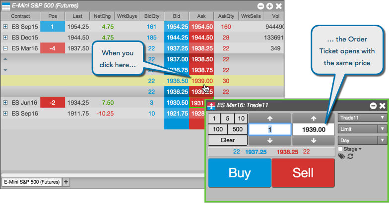
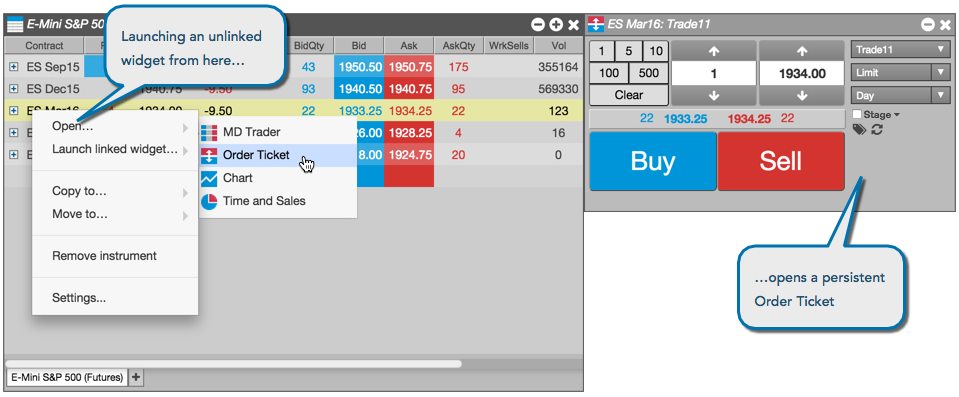

Floating Order Ticket
A floating Order Ticket lets you quickly enter orders by pre-populating the Order Ticket with market data. A floating Order Ticket opens when you click on any inside market (Bid, Ask, BidQty, AskQty) value or the Position value when you have an open position. The ticket automatically populates the field with the value in the matching field.
You can open a Floating Order Ticket from the following widgets:
- Market Grid
- Options Chain
- Spread Matrix
For example, suppose you are looking at a Market Grid. If you click a Bid price, the Price field of the Order Ticket contains the Bid price you clicked. Likewise, clicking a quantity column, like BidQty or Pos, populates the Quantity field of the Order Ticket with the value.

Note: The green border around the Order Ticket indicates that it is a floating ticket that will close when you place an order.
Linked Order Ticket
A linked Order Ticket lets you enter orders for a selected contract in the Market Grid. Unlike a floating order ticket, a linked Order Ticket remains open after you place an order.

Note: The yellow border around the Order Ticket indicates that the ticket will not close when you place an order.
Unlinked Order Ticket
If you prefer to use separate Order Tickets for each of the instruments you trade, you can launch an unlinked Order Ticket. These unlinked widgets use static contracts, so do not change when you click other contracts in the Market Grid.

Note: The lack of a colored border indicates the Order Ticket is not linked to another widget (the Market Grid, in this case).